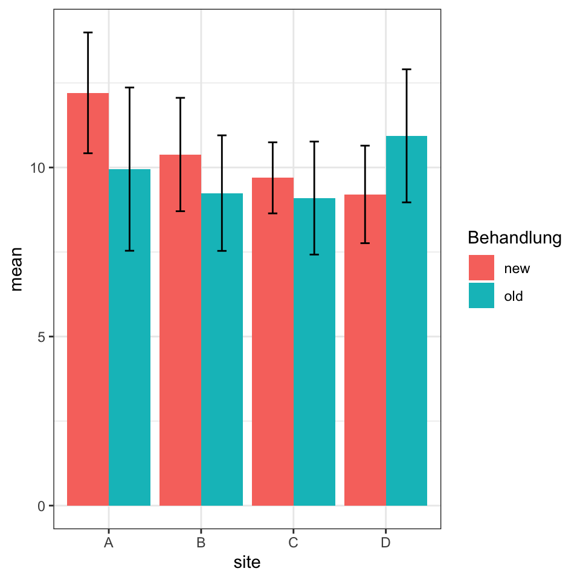
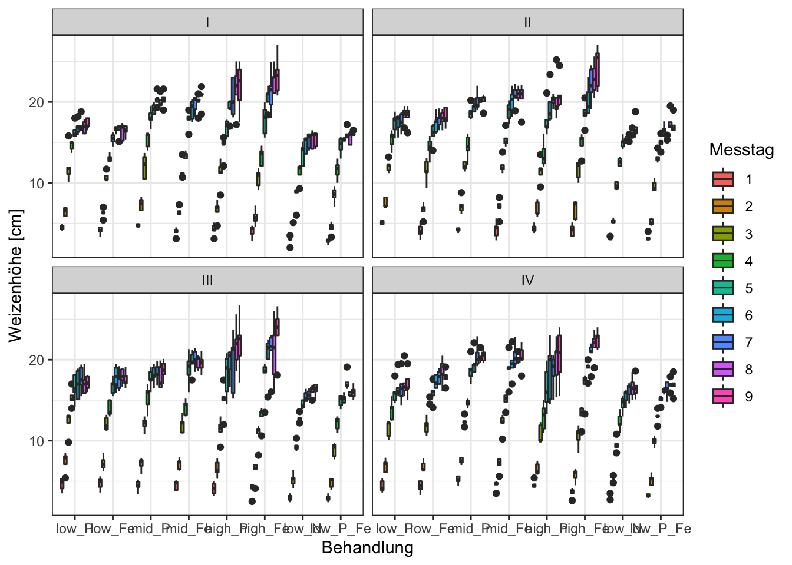
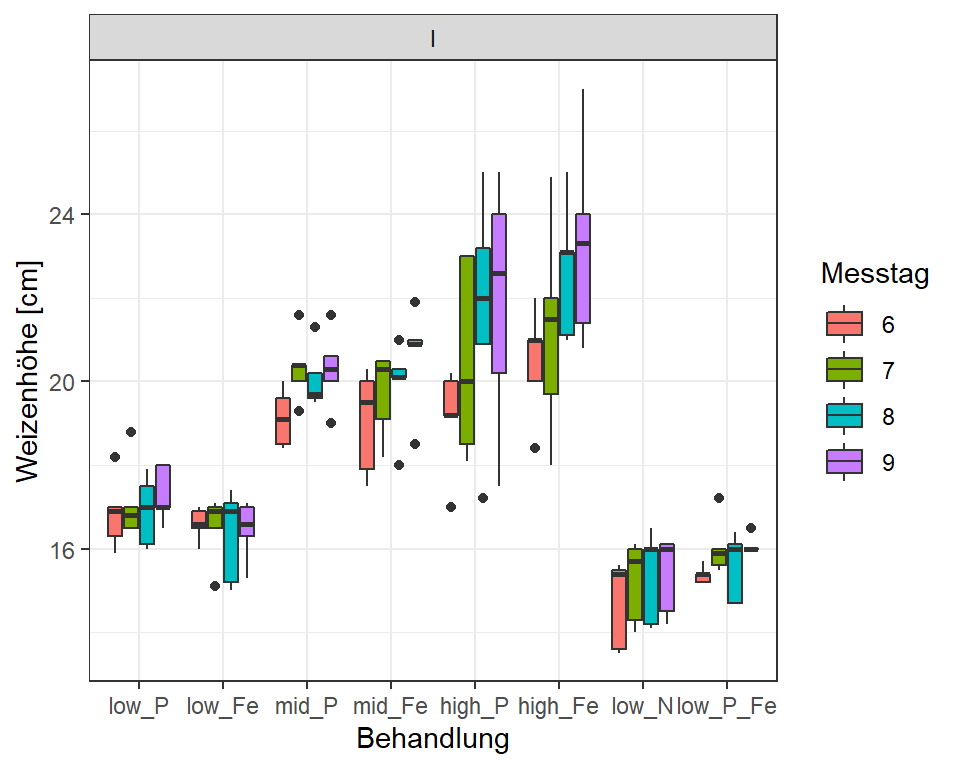
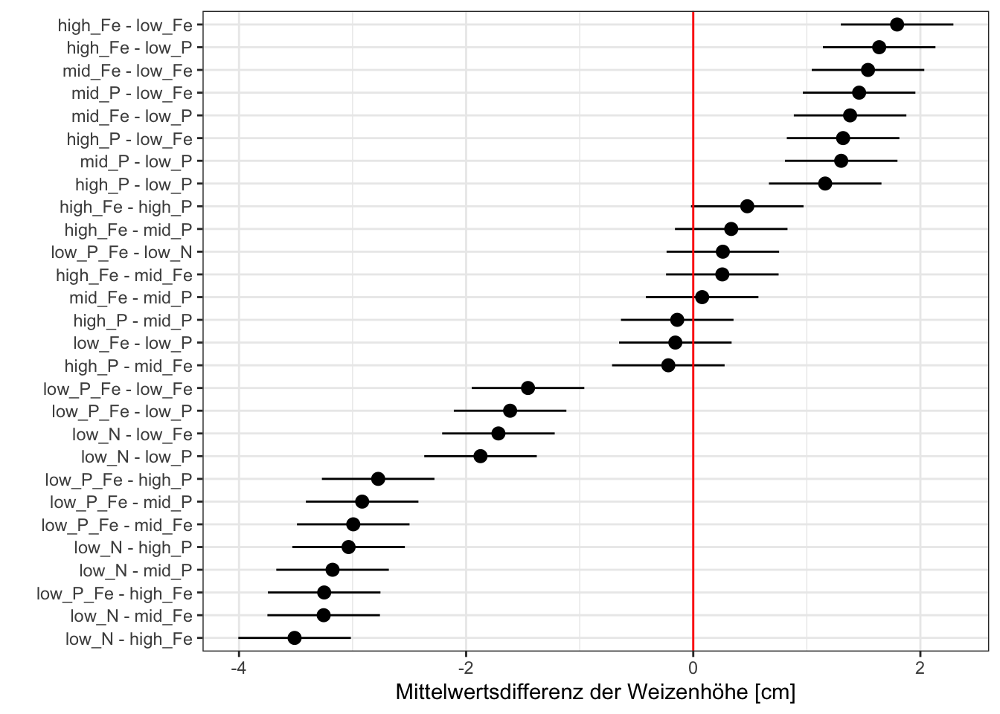
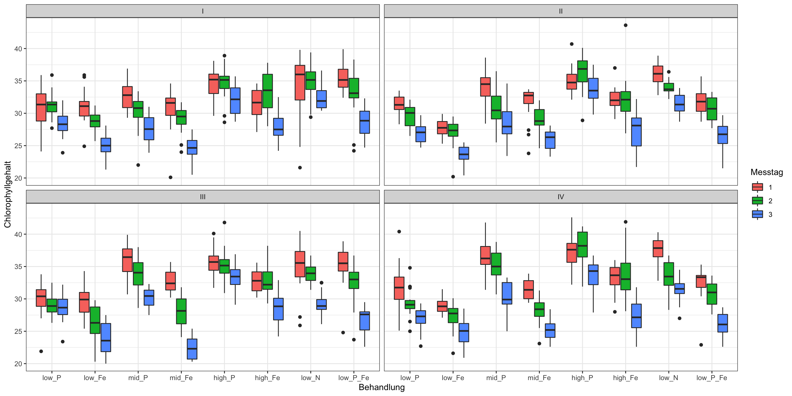
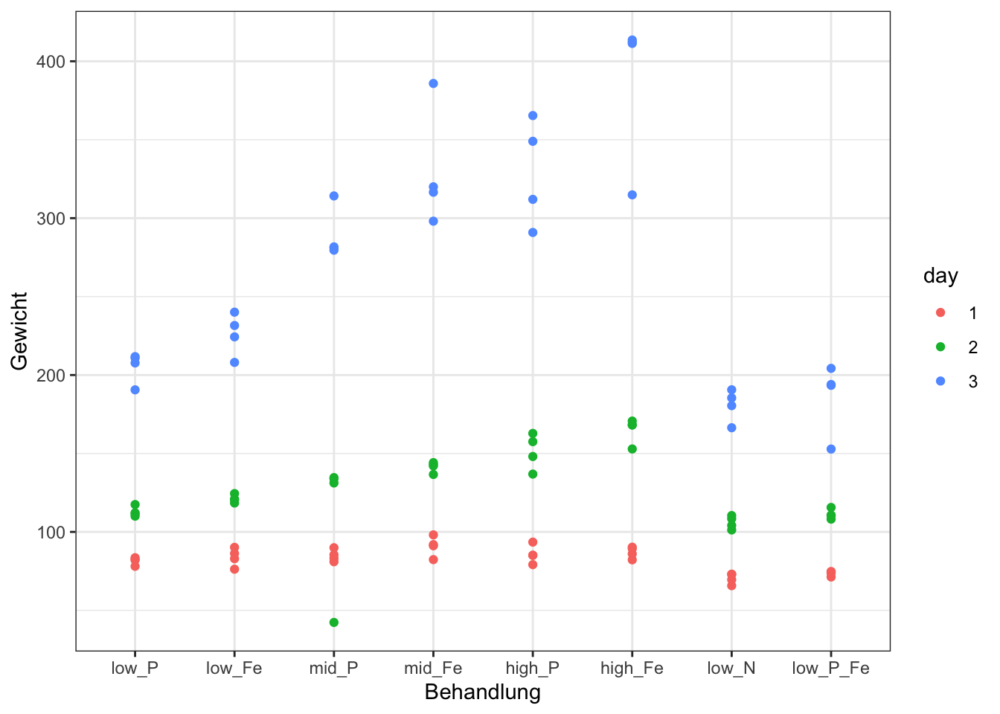

Appendix B — Tutorium in R
Version vom October 21, 2022 um 15:48:56
In diesem Kapitel gibt es eine etwas wilde Sammlung an Fragen und Antworten, die im Rahmen des R Tutoriums aufkamen. Vielleicht findest du ja was, was dich inspiriert.
- Wie setze ich um einen farbigen Punkt einen schwarzen Rand? (siehe Kapitel B.2)
- Wie kann ich die Anordnung der Nutzungen bzw. Behandlungen in einer Grafik definieren? (siehe Kapitel B.3)
- Wie kann ich die Anordnung der Fehlerbalken in einem Barplot verändern? (siehe Kapitel B.4)
B.1 Genutzte R Pakete für das Kapitel
Wir wollen folgende R Pakete in diesem Kapitel nutzen.
pacman::p_load(tidyverse, magrittr, readxl, broom, broom.mixed,
multcomp, emmeans, performance, lme4, effectsize)Schaue dir bitte erst den R Code zu deiner Frage an und dann kannst du die Pakete noch nachinstallieren. Es werden sich hier sicherlich eine Menge ansammeln.
B.2 Wie setze ich um einen farbigen Punkt einen schwarzen Rand?
In ggplot können wir verschiedene Typen von Punkte auswählen - auch shape genannt. Der shape mit der Nummer 21 hat die Möglichkeit die Füllung fill anders zu wählen, als die Randfarbe über color. Daher können wir die Punkte nach dem Faktor trt einfärben und setzen dann in dem geom_point() die Randfarbe auf black. Wir könnten da auch jede andere Farbe nehmen.
B.3 Wie kann ich die Anordnung der Nutzungen bzw. Behandlungen in einer Grafik definieren?
Häufig ist es so, dass unser Behandlungs oder Nutzenspalte eine bestimmte Ordnung hat. Wenn wir die Ordnung beibehalten wollen, wie die Ordnung auch im Datensatz ist, dann können wir nach dem Einlesen der Daten die Funktion as_factor() nutzen. Dann bleibt die ursprüngliche Ordnung erhalten.
Wenn wir eine andere Ordnung haben wollen, dann können wir mit der Funktion factor() und der Option level = eine neue Ordnung der existierenden Level vorgeben.
Für die Umbenennung in R empfehle ich die Funktion recode().
B.4 Wie kann ich die Anordnung der Fehlerbalken in einem Barplot verändern?
In dem Kapitel 16 haben wir uns ja nur mit Balkendiagrammen mit einem Faktor beschäftigt. Das heist, wir haben den Faktor auf die x-Achse gelegt und schon hatten wir den Plot. Wenn wir zwei Faktoren haben, dann müssen wir über die Option position = position_dodge() etwas spielen. Wir können auch die Position und des Abstand etwas ändern. Ich habe hier 0.9 für die Fehlerbalken in position = position_dodge() probiert und es sieht ziemlich gut aus.
plot_tbl <- expand_grid(site = 1:4,
trt = 1:2,
rep = 1:5) %>%
mutate(site = factor(site, labels = c("A", "B", "C", "D")),
trt = factor(trt, labels = c("new", "old")),
rsp = rnorm(n(), 10, 2))
stat_tbl <- plot_tbl %>%
group_by(site, trt) %>%
summarise(mean = mean(rsp),
sd = sd(rsp))
ggplot(stat_tbl, aes(x = site, y = mean, group = trt, fill = trt)) +
geom_bar(stat = "identity", position = position_dodge()) +
geom_errorbar(aes(ymin = mean-sd, ymax = mean+sd),
width = 0.2, position = position_dodge(0.9)) +
theme_bw() +
labs(fill = "Behandlung")
B.5 Keimung
germ_tbl <- read_excel("data/germination_data.xlsx")B.6 Schweine
pig_tbl <- read_excel("data/pig_feed_data.xlsx")B.7 Kohlenstoff/Nitrat
carbon_tbl <- read_excel("data/carbon_data.xlsx") %>%
mutate(c2n = c_o/n,
c_m2c_o = c_m/c_o)B.8 Lichtintensität
fit_1 <- lm(growth ~ light_intensity + rack + layer, data = intensity_tbl)
fit_1 %>% anova %>% tidy# A tibble: 4 × 6
term df sumsq meansq statistic p.value
<chr> <int> <dbl> <dbl> <dbl> <dbl>
1 light_intensity 2 433. 217. 3.87 0.0278
2 rack 2 628. 314. 5.61 0.00652
3 layer 2 70.9 35.5 0.633 0.535
4 Residuals 47 2631. 56.0 NA NA fit_1 %>% glht(linfct = mcp(light_intensity = "Tukey")) %>% tidy# A tibble: 3 × 7
term contrast null.value estimate std.error statistic adj.p.value
<chr> <chr> <dbl> <dbl> <dbl> <dbl> <dbl>
1 light_intensity mid - low 0 -2.88 2.49 -1.15 0.486
2 light_intensity high - low 0 -6.91 2.49 -2.77 0.0215
3 light_intensity high - mid 0 -4.03 2.49 -1.61 0.249 marginal <- emmeans(fit_1, "light_intensity")
tidy(marginal) %>%
mutate_if(is.numeric, round, 2)# A tibble: 3 × 6
light_intensity estimate std.error df statistic p.value
<chr> <dbl> <dbl> <dbl> <dbl> <dbl>
1 low 18.2 1.76 47 10.3 0
2 mid 15.3 1.76 47 8.69 0
3 high 11.3 1.76 47 6.4 0marginal %>% contrast(method = "pairwise") %>% tidy %>%
mutate_if(is.numeric, round, 2)# A tibble: 3 × 8
term contrast null.value estimate std.error df statistic adj.p.value
<chr> <chr> <dbl> <dbl> <dbl> <dbl> <dbl> <dbl>
1 light_inte… low - m… 0 2.88 2.49 47 1.15 0.49
2 light_inte… low - h… 0 6.91 2.49 47 2.77 0.02
3 light_inte… mid - h… 0 4.03 2.49 47 1.61 0.25B.9 Komplexes Weizenbeispiel
Wir wollen uns nun ein kpmplexeres Datenbeispiel anschauen. In diesem Beispiel liegen zum einen die Daten in einem ungünstigen Wide-Format vor und müssen über gather() erst in das Long-Format gebracht werden. Zum anderen entstehen dadurch ungünstige Einträge in der key-Spalte, so dass wir hier nochmal einen regulären Ausdruck benötigen um den character Vektor umwandeln zu können.
Als wäre dies nicht schon kompliziert genug, schauen wir uns nicht nur ein Outcome an, sondern in der Summe die Outcomes Weizenhöhe, Chlorophyllgehalt sowie Frisch- und Trockengewichte. Der Weizen wurde in vier Blöcken angezogen und zu verschiedenen Zeitpunkten gemessen. Hierdurch entsteht ein komplexer Versuchsaufbau.
B.9.1 Weizenhöhe
Die Höhe der Weizenpflanzen [cm] wurde in vier Blöcken an insgesamt neun Tagen gemessen. Die Datei corn_plant_height.csv beinhaltet die Daten des Versuchs. Für die folgende Auswertung nehmen wir an, das die Weizenhöhe normalverteilt ist. Wie beginnen mit einer exploratven Datenanalyse udn schauen uns die Daten einmal an.
B.9.1.1 Exlorative Datenanalyse
In der csv-Datei sind die die Tage jeweils fünfmal mit einer 1 bis 9 in den Spalten abgebildet. Wir nutzen die Funktion read_csv2 um mit dem deutschen Format der csv-Datei umgehen zu können. Die Funktion read_csv2 erkennt das ; als Separator. Da R nicht mit gleichen Benennungen in den Spalten umgehen kann, setzt R hinter jeden Spaltennamen, der gleich ist drei Punkte und eine fortlaufende Zahl. Mit der Funktion gather() können wir die Spalten 1...3 bis 9...47 untereinanderkleben. Abschließend müssen wir noch den ...[Zahl]-Teil loswerden. Das machen wir über den regulären Ausdruck in der Funktion str_replace(). Reguläre Ausdrücke musst du nicht verstehen, sind aber sehr mächtige Werkzeuge im Umgang mit großen Datensätzen.
Schauen wir uns nun einmal die Daten an. Unser Outcome (Y) ist height und auf X wollen wir das treatment. Das wollen wir die Boxplots noch nach dem Tag einfärben und jeweils ein Subplot für die vier Blöcke bauen.
ggplot(plant_tbl, aes(x = treatment, y = height, fill = day)) +
geom_boxplot() +
facet_wrap(~ block) +
labs(x = "Behandlung", y = "Weizenhöhe [cm]", fill = "Messtag") +
theme_bw()
Abbildung B.4 zeigt den entsprechenden Boxplot. Du siehst, dass du auf den ersten Blick nichts siehst. Bei einer so großen Datenmenge ist es selbst mit einem guten ggplot() schwer etwas zu erkennen. Hier müssen wir uns mehrere Fragen stellen…
- … wollen wir wirklich alle Blöcke getrennt auswerten?
- … wollen wir uns wirklich alle Tage anschauen? Oder geht es nicht eher um die Pflanzenhöhe am Ende des Versuches?
- … wollen wir wirklich alle
treatmentStufen vergleichen?
plant_tbl %>%
filter(block == "I") %>%
filter(day %in% c(6, 7, 8, 9)) %>%
ggplot(aes(x = treatment, y = height, fill = day)) +
geom_boxplot() +
facet_wrap(~ block) +
labs(x = "Behandlung", y = "Weizenhöhe [cm]", fill = "Messtag") +
theme_bw()
Abbildung B.5 zeigt einen Auschnitt in dem wir nur nach Block I und den Tagen 6 bis 9 gefiltert haben. In diesem Fall könnten wir auf den vollen Datensatz weitermachen oder vorab über filter() einen kleinern Datensatz bauen, der unsere Fragestellung bgut beantworten kann. Wir gehen jetzt den steinigeren Weg und analysieren den ganzen Datensatz - das muss nicht der bessere Weg sein!
B.9.1.2 Lineares Modell mit lm()
Wir beginnen mit einer ANOVA und müssen dafür ein lineare Modell schätzen. Dafür nutzen wir erst die Funktion lm() und anschließend mit dem Ergebnis des linearen Modells die Funktion anova() um eine Varianzanalyse durchzuführen.
fit_height <- lm(height ~ treatment + day + block +
treatment:day + treatment:block,
data = plant_tbl)
fit_height %>% anovaAnalysis of Variance Table
Response: height
Df Sum Sq Mean Sq F value Pr(>F)
treatment 7 2402.5 343.22 211.20218 < 0.000000000000000222 ***
day 8 41280.2 5160.03 3175.28495 < 0.000000000000000222 ***
block 3 63.4 21.14 13.01124 0.0000000222375065 ***
treatment:day 56 1076.3 19.22 11.82650 < 0.000000000000000222 ***
treatment:block 21 162.2 7.72 4.75297 0.0000000000099287 ***
Residuals 1344 2184.1 1.63
---
Signif. codes: 0 '***' 0.001 '**' 0.01 '*' 0.05 '.' 0.1 ' ' 1Wir konzentrieren uns auf die Spalte Pr(>F) welche den p-Wert beinhaltet. Wir schauen welcher p-Wert kleiner ist als \(\alpha = 5\% = 0.05\). Alle p-Werte sind signifikant. Mindestens zwei treatment Level unterscheiden sich, mindestens zwei day Level unterschieden sich und mindestens zwei block Level unterscheiden sich. Abschließend ist auch der Interaktionsterm zwischen den Behandlungen und den Tagen sowie den Behandlungen und den Blöcken signifikant.
fit_height %>% anova %>% eta_squared(partial = FALSE)# Effect Size for ANOVA (Type I)
Parameter | Eta2 | 95% CI
-----------------------------------------
treatment | 0.05 | [0.03, 1.00]
day | 0.88 | [0.87, 1.00]
block | 1.34e-03 | [0.00, 1.00]
treatment:day | 0.02 | [0.00, 1.00]
treatment:block | 3.44e-03 | [0.00, 1.00]
- One-sided CIs: upper bound fixed at [1.00].fit_height_lme <- lmer(height ~ treatment + block + (1|day),
data = plant_tbl)
fit_height_lme %>% summaryLinear mixed model fit by REML ['lmerMod']
Formula: height ~ treatment + block + (1 | day)
Data: plant_tbl
REML criterion at convergence: 5430.6
Scaled residuals:
Min 1Q Median 3Q Max
-3.09029 -0.62046 -0.00151 0.57885 4.37546
Random effects:
Groups Name Variance Std.Dev.
day (Intercept) 32.2351 5.6776
Residual 2.4085 1.5519
Number of obs: 1440, groups: day, 9
Fixed effects:
Estimate Std. Error t value
(Intercept) 13.51875 1.89739 7.1249
treatmentlow_Fe -0.15778 0.16359 -0.9645
treatmentmid_P 1.30278 0.16359 7.9637
treatmentmid_Fe 1.38111 0.16359 8.4425
treatmenthigh_P 1.16167 0.16359 7.1011
treatmenthigh_Fe 1.63722 0.16359 10.0081
treatmentlow_N -1.87333 0.16359 -11.4514
treatmentlow_P_Fe -1.61278 0.16359 -9.8587
blockII 0.58861 0.11568 5.0885
blockIII 0.24611 0.11568 2.1276
blockIV 0.23472 0.11568 2.0291
Correlation of Fixed Effects:
(Intr) trtmntl_F trtmntm_P trtmntm_F trtmnth_P trtmnth_F trtm_N
tretmntlw_F -0.043
tretmntmd_P -0.043 0.500
tretmntmd_F -0.043 0.500 0.500
trtmnthgh_P -0.043 0.500 0.500 0.500
trtmnthgh_F -0.043 0.500 0.500 0.500 0.500
tretmntlw_N -0.043 0.500 0.500 0.500 0.500 0.500
trtmntl_P_F -0.043 0.500 0.500 0.500 0.500 0.500 0.500
blockII -0.030 0.000 0.000 0.000 0.000 0.000 0.000
blockIII -0.030 0.000 0.000 0.000 0.000 0.000 0.000
blockIV -0.030 0.000 0.000 0.000 0.000 0.000 0.000
tr_P_F blckII blcIII
tretmntlw_F
tretmntmd_P
tretmntmd_F
trtmnthgh_P
trtmnthgh_F
tretmntlw_N
trtmntl_P_F
blockII 0.000
blockIII 0.000 0.500
blockIV 0.000 0.500 0.500fit_height_lme %>%
tidy(conf.int = TRUE, effects = "fixed")# A tibble: 11 × 7
effect term estimate std.error statistic conf.low conf.high
<chr> <chr> <dbl> <dbl> <dbl> <dbl> <dbl>
1 fixed (Intercept) 13.5 1.90 7.12 9.80 17.2
2 fixed treatmentlow_Fe -0.158 0.164 -0.964 -0.478 0.163
3 fixed treatmentmid_P 1.30 0.164 7.96 0.982 1.62
4 fixed treatmentmid_Fe 1.38 0.164 8.44 1.06 1.70
5 fixed treatmenthigh_P 1.16 0.164 7.10 0.841 1.48
6 fixed treatmenthigh_Fe 1.64 0.164 10.0 1.32 1.96
7 fixed treatmentlow_N -1.87 0.164 -11.5 -2.19 -1.55
8 fixed treatmentlow_P_Fe -1.61 0.164 -9.86 -1.93 -1.29
9 fixed blockII 0.589 0.116 5.09 0.362 0.815
10 fixed blockIII 0.246 0.116 2.13 0.0194 0.473
11 fixed blockIV 0.235 0.116 2.03 0.00800 0.461model_performance(fit_height_lme) # Indices of model performance
AIC | AICc | BIC | R2 (cond.) | R2 (marg.) | ICC | RMSE | Sigma
--------------------------------------------------------------------------------
5456.619 | 5456.875 | 5525.161 | 0.934 | 0.047 | 0.930 | 1.542 | 1.552r2(fit_height_lme)# R2 for Mixed Models
Conditional R2: 0.934
Marginal R2: 0.047conf_tbl <- glht(fit_height_lme, linfct = mcp(treatment = "Tukey")) %>%
tidy(conf.int = TRUE) %>%
arrange(estimate) %>%
mutate(contrast = as_factor(contrast))Joining, by = c("term", "contrast", "estimate")ggplot(conf_tbl, aes(x = contrast, y = estimate,
ymin = conf.low, ymax = conf.high)) +
geom_pointrange() +
geom_hline(yintercept = 0, color = "red") +
labs(x = "", y = "Mittelwertsdifferenz der Weizenhöhe [cm]") +
coord_flip() +
theme_bw()
B.9.2 Chlorophyllgehalt
chlorophyl_tbl <- read_csv2("data/corn_chlorophyl.csv") %>%
gather(key = "day", value = "chlorophyl", "1...3":"3...62") %>%
mutate(day = str_replace(day, "...\\d+", ""),
day = as_factor(day),
treatment = as_factor(treatment),
block = factor(block, labels = c("I", "II", "III", "IV"))) %>%
filter(chlorophyl >= 20 & chlorophyl <= 100)ggplot(chlorophyl_tbl, aes(x = treatment, y = chlorophyl, fill = day)) +
geom_boxplot() +
facet_wrap(~ block) +
labs(x = "Behandlung", y = "Chlorophyllgehalt", fill = "Messtag") +
theme_bw()
B.9.3 Frisch- und Trockenmasse
burn_tbl <- read_csv2("data/corn_burning.csv") %>%
gather(key = "day_outcome", value = "drymatter", "1_FM":"3_TMperc") %>%
separate(day_outcome, c("day", "outcome")) %>%
mutate(day = as_factor(day),
treatment = as_factor(treatment),
block = factor(block, labels = c("I", "II", "III", "IV")),
outcome = as_factor(outcome)) burn_tbl %>%
filter(outcome == "FM") %>%
ggplot(aes(x = treatment, y = drymatter, color = day)) +
geom_point() +
##facet_wrap(~ block, scales = "free_y") +
labs(x = "Behandlung", y = "Gewicht", fill = "Messtag") +
theme_bw()